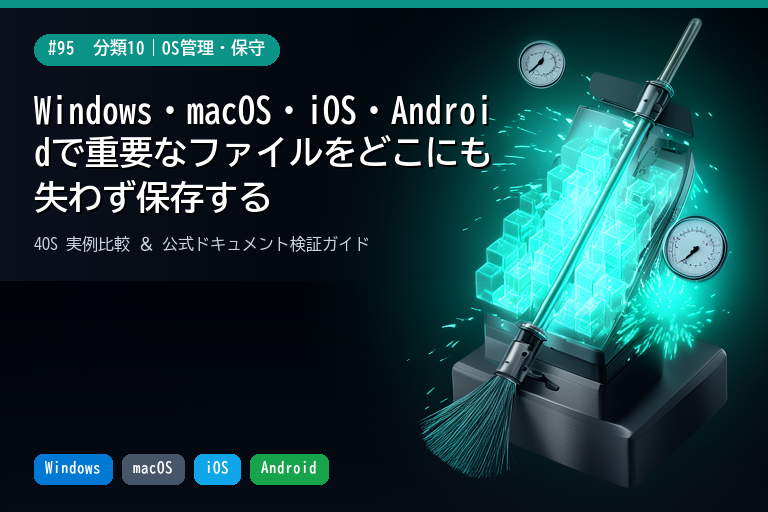

#95｜分類10: システム管理・OS設定・メンテナンス 2026-11-28

Windows・macOS・iOS・Androidで重要なファイルをどこにも失わず保存する｜クラウドバックアップの実践ガイド
「大切な写真や仕事の資料、スマホで撮った思い出の動画……もし今、手元のデバイスが故障したり紛失したりしたら？」
そんな不安を抱えている方は少なくありません。ハードディスクの物理的な破損や、スマートフォンの水没・紛失は、予期せぬ瞬間に起こるものです。大切なデータを守るための「最終防衛線」は、ローカルストレージ（本体）だけに頼ることではなく、クラウドへの自動同期を確立することにあります。
この記事では、主要な4つのOS（Windows, macOS, iOS, Android）において、いかにして重要なファイルを「どこにも失わずに」保存するか、具体的な設定手順とトラブル解決策を徹底解説します。
4OS比較早見表
| OS | 推奨される標準クラウド | 同期の仕組み | 特徴・備考 |
|---|---|---|---|
| Windows 11 | OneDrive | ファイルエクスプローラーと統合 | 「デスクトップ」「ドキュメント」等の自動バックアップに強い |
| macOS | iCloud Drive | Finderとシステム深く統合 | Apple製品間でのシームレスな同期が最大の特徴 |
| iOS | iCloud Drive | 「ファイル」アプリ経由 | 写真やメモの自動同期に加え、ファイル管理も可能 |
| Android | Google ドライブ | 「Files by Google」等と連携 | Googleアカウントとの親和性が高く、柔軟なファイル操作が可能 |
1. Windows 11 での実例手順
Windows環境では、Microsoft純正の「OneDrive」を活用するのが最もスムーズです。
公式手順：重要なファイルを OneDrive に自動バックアップ
- アプリの準備: Microsoft Storeから「Microsoft OneDrive」をインストール（通常はプリインストールされています）。
- サインイン: アプリを起動し、Microsoftアカウントでサインインします。
- 同期設定: 左側のメニューから「PC のファイル」を選択。
- ドラッグ＆ドロップ: PC上の「ドキュメント」「ピクチャ」「デスクトップ」フォルダの中身をOneDriveフォルダへ移動（またはコピー）します。これにより、ローカルとクラウドの両方に自動で反映されます。
※注意点: Windows 11には「Windows Backup」という独立した一括バックアップツールは存在しません。特定のユーザーフォルダを保護するには、上記のようにOneDrive、あるいはGoogle ドライブ（PC用アプリ）のいずれかを選択する必要があります。
ストレージ不足への対応
「ストレージがいっぱいで同期できない」という場合は、以下の手順で空き容量を確保します。
- 手順: 「設定 > システム > ストレージ」から「ストレージセンサー」をオンにします。これにより、一時ファイルや不要なゴミファイルを自動で削除してくれます。
よくあるトラブルと解決法（Windows）
- 同期が止まっている/赤いアイコンが出る
- 原因：ネットワーク不良またはOneDriveプロセスの停止。
- 解決：タスクマネージャーを開き「OneDrive」プロセスを再起動、または設定画面から再度サインインしてください。
- ローカルファイルとクラウド上の内容が異なる
- 原因：「同期オフライン使用（オンデマンド）」機能により、ファイルの実体がPCにない状態になっている。
- 解決：通知領域のOneDriveアイコンを右クリックし、「すべてのファイルをダウンロード」を選択するか、設定で「常にこのフォルダを PC に保存する」をオンにします。
- OneDrive がインストールできない/起動しない
- 原因：Windows Updateの不具合やレジストリ破損。
- 解決：Microsoft Storeから最新版へ更新。改善しない場合は公式サポートに従い再インストールするか、Google ドライブ PC アプリへの切り替えを検討してください。
2. macOS での実例手順
Macユーザーの場合、Apple純正の「iCloud Drive」を使うのが最も安定した選択です。
公式手順：重要なファイルを iCloud Drive または Google ドライブに保存
【方法A：iCloud Drive（推奨）】
1. 有効化: 「システム設定 > Apple ID > iCloud」から「iCloud Drive」をオンにします。
2. 配置: Finderのサイドバーにある「iCloud Drive」フォルダへファイルを移動します。これにより、iPhoneやiPadとも自動同期されます。
【方法B：Google ドライブ】
1. アプリ導入: App Storeから「Google ドライブ」アプリをインストールします。
2. 利用法: macOSでは標準のシステム統合よりも、専用アプリをインストールしてデスクトップ上のアイコンとして利用するのが一般的です（macOS 13.2以降は標準対応が限定的な場合があります）。
ストレージ不足への対応
- 手順: 「システム設定 > Apple ID > iCloud > iCloud Cloud Storage」から使用状況を確認。不要なバックアップや巨大なファイルを特定して削除します。
よくあるトラブルと解決法（macOS）
- 「iCloud Drive」が Finder に表示されない
- 原因：サービスの一時的な障害または設定の未適用。
- 解決：「システム設定 > Apple ID > iCloud」で一度オフにし、再度オンにした後にFinderを再起動してください。
- Google ドライブアプリが同期しない
- 原因：認証トークンの期限切れやネットワーク制限（会社などのファイアウォール）。
- 解決：アプリ内でサインアウトし、再度ログインを試みてください。
- iCloud バックアップ容量不足による保存失敗
- 原因：無料枠（5GB）の超過。
- 解決：Apple Storeから有料ストレージを購入するか、Google ドライブ等の他サービスへ移行します。
3. iOS（iPhone / iPad）での実例手順
iOSでは「ファイル」アプリをハブとして活用するのが基本です。
公式手順：重要なファイルを iCloud Drive または Google フォルダに保存
- iCloud有効化: 「設定 > [ユーザー名] > iCloud」から「iCloud ドライブ」をオンにします。
- 整理: 標準の「ファイル」アプリを開き、左サイドバーの「場所」で「iCloud ドライブ」を選択してファイルを管理します。
※Google フォルダとの連携について:
iOSでは標準機能でOneDrive等の自動バックアップは非対応です。Googleドライブ等を利用する場合は、App Storeから公式アプリをインストールし、アプリ内での同期設定、または「ファイル」アプリ内の共有フォルダとして利用してください。
ストレージ不足への対応
- 手順: 「設定 > 一般 > iPhoneストレージ」から状況を確認。「最適化された iCloud フォト」機能をオンにすることで、写真はクラウドへ逃がし、本体の容量を節約できます。
よくあるトラブルと解決法（iOS）
- 「ファイル」アプリで iCloud ドライブが選択できない
- 原因：iOSバージョンの不一致またはiCloudサービス障害。
- 解決：「設定 > Apple ID」からデータ同期の状態を確認し、端末の再起動を試みてください。最新OSへのアップデートも有効です。
- Google フォルダアプリで写真がバックアップされない
- 原因：権限未付与またはWi-Fi限定設定。
- 解決：「ファイル」アプリ > Google フォルダ内のメニューから「同期を有効にする」を確認し、ネットワーク設定を見直してください。
- iCloud バックアップ容量不足
- 原因：無料プランの5GBで満杯。
- 解決：有料ストレージを購入するか、Google ドライブ等の別アプリへ写真を直接アップロードする運用に切り替えます。
4. Android での実例手順
AndroidはメーカーごとにUIが異なりますが、基本は「Google ドライブ」との親和性が高いのが特徴です。
公式手順：重要なファイルを Google ドライブに保存
- ファイル管理: 「Files by Google」やメーカー純正の「マイファイル」アプリを開きます。
- アップロード: ファイルを選択し、「共有」または「コピー」から「Google ドライブ」を選択して保存します。
- OneDriveの活用: Play Storeから「Microsoft OneDrive」をインストールすれば、同様の操作で利用可能です。
ストレージ不足への対応
- 手順: 「設定 > システム管理（またはストレージ） > ストレージ」からキャッシュ削除や不要なアプリのアンインストールを行います。「Files by Google」ではSDカードの使用状況も確認できます。
よくあるトラブルと解決法（Android）
- 「ファイル管理アプリ」で Google ドライブが選択できない
- 原因：Androidバージョンの相性、またはメーカー独自のカスタマイズ制限。
- 解決：Google ドライブの公式アプリを開き、直接アップロードする操作に切り替えてください。
- バックアップ中にアプリが強制終了する
- 原因：メモリ不足やバッテリー最適化機能による制限。
- 解決：「設定 > アプリ > Google ドライブ」で「バッテリー使用量」を「制限なし」に変更してください。
よくあるトラブルと解決チェックリスト
| トラブル内容 | 推定原因 | 対処法 |
|---|---|---|
| 同期が途中で止まる | 通信環境の不安定、またはクラウド容量の超過 | Wi-Fi接続を確認し、ストレージ空き容量をチェックする |
| ファイルが開けない（破損） | 同期中の通信切断による不完全な転送 | 一度同期を停止し、再度再開。またはブラウザ版で確認 |
| 特定のフォルダだけ同期されない | フォルダ内のファイル名に禁止文字が含まれる | ファイル名を半角英数字のみに変更して試行 |
| アプリが起動しない/反応しない | キャッシュの蓄積やOSのバージョン不整合 | アプリのキャッシュ削除、または再インストールを実施 |
まとめ：快適なマルチOS環境を作るポイント
ここまで4つのOSにおけるクラウド保存術を見てきましたが、最も重要なのは「自動化」と「二重化」です。手動でアップロードする習慣は忘れがちですが、設定を一度済ませてしまえば、あとは意識せずにデータが守られる環境が作れます。
さらに快適な運用を目指すなら、以下の周辺機器やメンテナンスツールの導入も検討してみてください。
- SSD換装キット・クローン作成ソフト: PCの物理的な速度不足や容量不足を感じた際、内蔵ストレージを高速なNVMe SSDへ換装し、OSごとクローンすることで、クラウドとローカルの両方で快適な環境を維持できます。
- エアダスター・クリーニング用品: 物理的な故障（埃による熱暴走など）を防ぐため、定期的な清掃は必須です。特にPCの排気口やスマホの端子掃除は、デバイス寿命を延ばす基本です。
「どこにも失わない」という安心感を手に入れることで、クリエイティブな活動や日々の記録がより自由で楽しいものになるはずです。まずは今日、お使いのデバイスでクラウド同期の設定を一つ見直すことから始めてみましょう。
参考文献・公式ドキュメント（一次情報ソース）
本記事の手順・仕様は以下の各OSおよびツールの公式ドキュメントに基づいています。OSアップデートによりメニュー名称や挙動が変わる場合があるため、最新仕様の確認にもご活用ください。